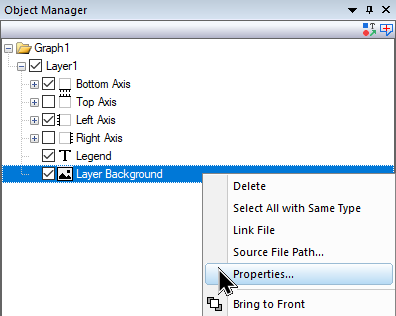

FAQ-1068 Wie füge ich ein Bild für den Grafikhintergrund und eine Verknüpfung zu den Layerskalierungen ein?
insert-graph-background-image-to-scale
Letztes Update: 05.12.2024
Origin 2025 und neuer
- Wählen Sie bei aktivem Diagrammfenster Einfügen: Bild aus Datei, um es in das Diagramm einzufügen.
- Klicken Sie mit der rechten Maustaste auf das eingefügte Bild und wählen Sie Als Layerhintergrund setzen.
Einige wissenswerte Fakten:
- Nach dem Festlegen des Bilds als Layerhintergrund kann das Bildfenster nur über die Objektverwaltung geöffnet werden. Stellen Sie sicher, dass Sie sich im Modus Diagrammobjekte zeigen befinden. Das Bild kann entweder per Doppelklick auf den "Layerhintergrund" gesteuert werden oder per Rechtsklick und Auswahl von 'Eigenschaften...').

- Da das Bild als Layerhintergrund festgelegt ist, wird durch die Größenveränderung des Layers die Größe des Bilds verändert/werden die Achsenskalen beschnitten.
Origin 2022 bis 2024b
- Wählen Sie bei aktivem Diagrammfenster Einfügen: Bild aus Datei und öffnen Sie Ihre Bilddatei.
- Klicken Sie doppelt auf das eingefügte Bild, um es in einem separatem Bildfenster zu öffnen.
- Klicken Sie mit der rechten Maustaste auf auf das Bild im Bildfenster und wählen Sie Als Layerhintergrund setzen.
Origin 2021b
- Wählen Sie bei aktivem Diagrammfenster Einfügen: Bilder aus Dateien. Eine Warnmeldung fragt Möchten Sie einen Layerhintergrund einfügen?
- Auf die Antwort Ja wird ein Bild als Hintergrundbild eingefügt, das mit Layerskalen verknüpft ist. Das Bild ist NICHT auswählbar.
- Durch die Antwort Nein wird das Bild einfach als ein Objekt in die Diagrammseite eingefügt. Sie können es auswählen, verschieben oder in der Größe verändern oder es über seinen Dialog Eigenschaften modifizieren.
Origin 2021 und älter
Origin hat eine X-Funktion mit dem Namen insertImg2g, die verwendet wird, um Bilder in Diagrammfenster einzufügen. Obwohl sie vorrangig implementiert wurde, um Origins App Google Map Import zu unterstützen, können Sie sie auch für sich allein verwenden, um ein Rasterbild in den Hintergrund einer Grafik einzufügen und das Bild auf die Skalierungen des Layers zu fixieren.
- Wenn Sie das Bild importiert haben, wird jede Änderung der Achsenskalierungen das Bild beschneiden. Daher müssen Sie die Achsenskalierungen vorher entsprechend anpassen.
- Öffnen Sie das Skriptfenster (Fenster: Skriptfenster), geben Sie die folgenden zwei Codezeilen ein, markieren Sie beide und drücken Sie Enter:
dlgfile g:="*.PNG"; // can substitute any supported raster file type for .PNG insertImg2g type:=img xyp:=2;
- Ein Dialog Öffnen wird Sie auffordern, Ihre Bilddatei zu wählen. Klicken Sie auf OK. Das Bild wird mit den folgenden Merkmalen in den Grafikhintergrund eingefügt:
- Das Bild wird hinter den Daten platziert und ist NICHT auswählbar.
- Das Bild ist mit Layer und Skalierungen im Streckungsmodus verbunden.
- Bilddimensionen sind mit dem Skalierungsbereich der Layerachsen identisch.
Schlüsselwörter:Raster, Bild einfügen, Layer und Skalen, Objektanhang